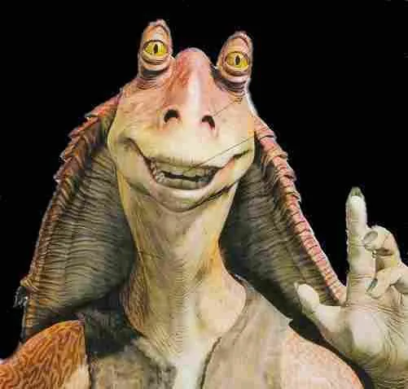

C-3PO e R2-D2
C-3PO é um droide de protocolo dourado, criado por Anakin Skywalker, cuja principal função é a comunicação — ele é fluente em mais de seis milhões de idiomas. Extremamente educado, sempre preocupado e um tanto dramático, C-3PO frequentemente se vê em situações perigosas contra sua vontade, servindo como a voz da razão (ou do pânico) no meio do caos. Ao seu lado, quase inseparável, está R2-D2, um pequeno droide astromecânico que, mesmo sem falar, expressa mais personalidade do que muitos humanos. Corajoso, leal e sempre pronto para agir, R2 salvou a vida de seus companheiros em inúmeras ocasiões, seja consertando naves em pleno voo ou carregando segredos vitais da galáxia.
BB-8
Mais tarde, surge BB-8, um droide esférico com um design inovador e carisma de sobra. Companheiro fiel do piloto Poe Dameron, BB-8 tem um jeito brincalhão e curioso, além de mostrar coragem em momentos críticos da nova trilogia. Sua aparência adorável conquistou rapidamente o público mais jovem, mas sua utilidade em campo é tão marcante quanto a de R2.

Jar Jar Binks
Já Jar Jar Binks é um personagem bastante controverso. Um gungan desastrado de Naboo, ele mistura inocência e atrapalhação em doses iguais. Embora muitos o vejam como um alívio cômico exagerado, Jar Jar teve papel decisivo na política galáctica ao sugerir poderes de emergência ao então Chanceler Palpatine — um erro histórico com consequências enormes. Apesar de tudo, sua boa intenção é inegável.
Chewbacca
Por fim, Chewbacca, o enorme Wookiee de Kashyyyk, é uma figura imponente e incrivelmente leal. Co-piloto da Millennium Falcon e braço direito de Han Solo, Chewie é conhecido por sua força, sua coragem inabalável e seus rugidos característicos, que comunicam tanto raiva quanto carinho. Embora pareça selvagem à primeira vista, Chewbacca é um amigo fiel e sensível, cuja presença é um alicerce silencioso na luta contra o Império e a Primeira Ordem.
Estes foram só alguns dos melhores personagens de toda a franquia.